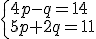
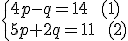
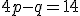
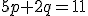
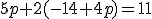
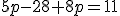
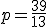

Sustitución
En este método procedemos de la siguiente manera: (Usemos el siguiente sistema como ejemplo)

Paso 1: "Bautizamos" las ecuaciones como (1) y (2)

Paso 2: Despejamos una de las incógnitas en cualquiera de las ecuaciones dadas (1) ó (2). Sugerencia:Selecciona la ecuación con coeficientes de menor valor absoluto y despeja la variable positiva. En caso de elegir una variable negativa, multiplica toda la ecuación por (-1).
Despejamos p en (1)
- 

Paso 3: Sustituimos la variable despejada en la otra ecuación y resolvemos.
Sustituimos q en (2)
- 
- 
- 
- 

Paso 4: Reemplazamos el valor de la variable hallada en cualquiera de las ecuaciones iniciales (1) ó (2)
Reemplazamos p en (1)


Si tienes alguna duda acerca de este método de solución de sistemas de ecuaciones, puedes observar el siguiente video de la profe Meli, donde se explica el paso a paso que aquí encontraste:
EVALÚO MIS AVANCES
Practica los pasos de este método con el siguiente sistema de ecuaciones (Completa el procedimiento):
2x - y = - 5 (1)
x + 5y = 14 (2)
Primero encuentra la solución despejando la Variable X
EVALÚO MIS AVANCES
Practica los pasos de este método con el mismo sistema de ecuaciones (Completa el procedimiento):
2x - y = - 5 (1)
x + 5y = 14 (2)
Ahora encuentra la solución despejando la Variable Y